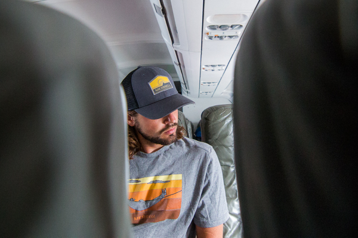

As we planned our Puerto Rico trip with Merrell, Mom was kind enough to make a great observation. Our home state of Florida lies right in between Puerto Rico and Montana, where we left our van in the airport parking lot. We had zero intentions of returning to Florida before January of 2017, but with a lot of changes in Florida for the Fricke family, we decided to go home for a quick visit.

Mom and Dad picked us up from the airport and we exchanged bear hugs. After loading up our bags in the trunk, we headed straight for our cousin Kristy’s house to see the first of things that have changed since we left back in January. Kristy and her husband, Josh, had just moved into their new home, right around the time they had their third completely adorable baby. It was great to hang out with all of our cousins and second cousins, meet baby Sam, give them gifts from Puerto Rico, and see how much the little ones have grown in just 8 months.
One of the top items on our Florida to-do list was to find a good surf session with old friends. I have a group of friends that can still make time to get together. No matter how much we’ve changed, it’s amazing that they will all set aside a day to catch up, joke around, and go for a couple surf sessions.
Surprisingly, the waves were pretty fun. Florida doesn’t get the greatest surf but New Smyrna always has a surfable wave at the inlet. The ocean was pretty mixed up with an incoming tropical storm and there were lots of closeouts, but there were also plenty of smiles, laughs, and the occasional cutback. Nothing beats a fun day of waves with your buddies, especially sans wetsuit!
The following day had been planned for us since the moment we got off the phone with Mom, telling her we’d come visit. Sunday morning was spent at church, followed by lunch with the family, beers with friends, dinner with Grandma, and I even managed to steal Dad’s truck to spend the evening with my pals from Shows I Go To for some local music and brews.
Our last day at home was the most meaningful. Our dog, Bailey, is 13 years old now. When we left in January, we said our goodbyes to him, not knowing what could happen this year. It was devastating to say goodbye to him but we knew it had to be done. He’s been having some health issues while we’ve been gone, but has been holding strong thanks to Mom taking care of him day and night. It was amazing to get a few more days with our pup; days we weren’t sure we’d get with him. The three of us took him to his favorite dog park to do a little photoshoot. Although he’s slowed down quite a bit, I still saw glimpses of the 1-year-old puppy we adopted from the Humane Society years and years ago.
Our visit home was great, but it wasn’t an easy one. We witnessed tons of change that all seemed to happen without us. Some good and some difficult to grasp. While we’re excited to continue on with our journey, it’s amazing to feel love and support from our roots no matter how much changes.